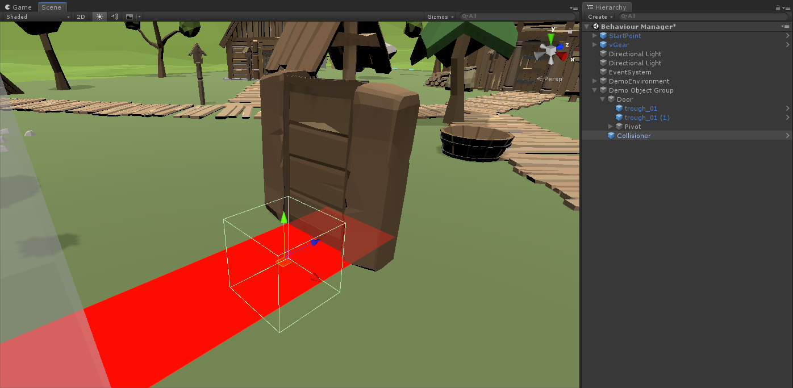

Using Behaviour System
VotanicXR has a built-in Behaviour System which provides a no-code interface for developers to implement simple application logic such as performing interactions, sending commands, moving object transforms, etc. This chapter introduces how to use the Behaviour System to create simple events in the VotanicXR application.
Tutorial Scene and Related Materials
Go to Assets > Votanic > VotanicXR_Tutorial > Tutorial08_BehaviourSystem and open the scene BehaviourSystem provided.
The tutorial scene has a DemoObjectGroup which contains a Door model and a Collisioner in front of the door. In this tutorial, we will setup a behaviour to open the door when the user walks in front of the door.
The Collisioner is a transparent GameObject with vGear_Collisioner script inside. It is used for triggering event when other GameObject collides with it. In the tutorial, we will use the Collisioner to trigger an open door event when the user walks into the Collisioner.

Behaviour Manager and Behaviour
In the VotanicXR Behaviour System, Behaviour Manager is the key component for controlling and managing every behaviour in the scene. Behaviour is an event-based trigger, if some condition(s) is fulfilled, then the corresponding action plan(s) will be performed. For each Behaviour, it can consist of at least one branch, where each branch has its respective trigger condition(s) and action plan(s).
Adding Behaviour Manager
The Behaviour Manager is the key component for the VotanicXR Behaviour system. It must be present in the scene for the Behaviour to function correctly.
- In the
Hierarchywindow, right-click and selectvGear > GameObject > Behaviour Manager. ABehaviour Managerprefab will be added.

Creating Behaviour
The
BehaviourMangaerprefab hasV Gear_Behaviour(Script)inInspectorwindow. ClickAdd Behaviourbutton will add aBehavioursub item under theBehaviourManager.Select the new
Behaviourprefab to configure the behaviour details.In the
V Gear_Behaviour (Script), you can manage branch(es), and configure condition(s) and action(s) for each branch. The below figure and table show the layout elements and detailed description of a Behaviour.UI Element Description Add / Remove Branch to add or remove an if branchstatement which consists ofcondition(s) and action(s)inside the branch. If the conditions are fulfilled, the actions will be performed.
If multipleif branchstatements exist, they will be checked sequentially. Only the first matchedif branchstatement will be performed. All the subsequent branches will be skipped.Add / Remove Trigger Trigger is the condition group of the branch. If the condition(s) inside the Trigger group are fulfilled, the corresponding action(s) will be executed. If several trigger groups are setup, the action will be executed if one of the trigger group is fulfilled. Add / Remove Plan Plan is the action group of the branch. if the plan is executed, actions inside the plan will be performed.
If multiple plans existed, developer can specify a probability for each plan, indicating the chance in which the particular plan will be executed.The behaviour name can be changed to other meaningful name for identification. In this example, we name the behaviour as
Open door behaviour. Then, clickAdd Branchto create anif branchstatement and name it asUse collisioner to open the door. In the branch, click theAdd ConditionandAdd Actionbutton to create aTriggerand aPlangroup and name it asCollision with collisionerandOpen the door, respectively.Then, click the
Condition 1button to open theConditionpopup window to setup the trigger condition. In the popup window, configure the properties as follows:- Name: Hit collision (for identification, you can use other meaningful wording)
- Type: Collision
- Collisioner:
CollisionerGameObject
After that, the popup windows can be closed.
Note: apart from the Collision type, there are other types can be used for condition checking. The detailed information can be checked from this link.
Next, click
Action 1button to open aActionpopup windows to setup the action. In the popup windows, configure the properties as follows:- Name: rotate the door transform (for identification, you can use other meaningful wording)
- Type: Transformation
- Number of Objects: 1
- Objects: door gameobject
- Rotation: ???????
Note: apart from
Transformationtype, there are other actions can be used. The detailed information can be checked from this link.After the configuration, the behaviour should be similar to the below figure.
The result of this example will be as follows: when the user goes in front of the door and hits the collisioner, the door will open automatically.